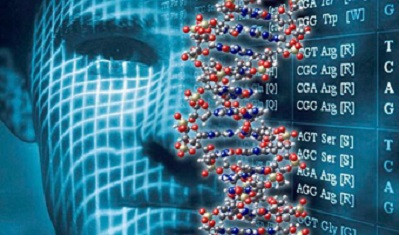

GENÉTICA.
¿Qué es la genética?
La genética es el estudio científico de los genes y la herencia ( cómo de ciertas cualidades o rasgos
se heredan de padres a hijos como resultado de cambios en la secuencia de ADN). Un gen es un segmento de ADN,
el cual contiene las instrucciones para elaborar una o más moléculas que ayudan a que funcione el cuerpo.
El ADN tiene forma de escalera torcida, como un sacacorchos, llamada doble hélice. Los dos rieles de la escalera
se llaman cadenas principales y los escalones son pares de cuatro componentes básicos (adenina, timina,
guanina y citocina), que se llaman bases. Las secuencias de estas bases dan las instrucciones para elaborar
moléculas, cuya mayoría son proteínas. Los investigadores calculan que los seres humanos tenemos aproximadamente
20,000 genes.
Todo el material genético de un organismo, incluso los genes y otros elementos que controlan su actividad,
constituye el genoma. El genoma completo de un organismo se encuentra en casi todas sus células. En las células
de los seres humanos, las plantas y los animales, el genoma está alojado en una estructura llamada núcleo.
El genoma humano es, en su mayor parte, el mismo en todas las personas, solo con unas pocas variaciones.
Para más información sobre el genoma humano, visite la página web sobre genómica del Instituto Nacional de
Investigación sobre el Genoma Humano.
¿Cómo se heredan los genes?
Nuestro ADN, incluso todos nuestros genes, está almacenado en los cromosomas, los cuales son estructuras que lo
envuelven firmemente para que quepa en el núcleo. Los seres humanos usualmente tenemos 23 pares de cromosomas en
las células. Los dos cromosomas de cada par contienen los mismos genes, pero pueden tener versiones diferentes de
estos, porque, en cada par, heredamos un cromosoma de nuestra madre y otro de nuestro padre. Las células
reproductoras (los óvulos y los espermatozoides) reciben un cromosoma al azar de cada grupo de 23 en lugar de
ambos a fin de que el óvulo fecundado contenga los 23 pares necesarios para el desarrollo típico.
¿Que es el cruce monohibrido?
Monohíbrido es un adjetivo que se utiliza para calificar a un tipo de cruzamiento o cruce. Un cruzamiento,
en tanto, implica la combinación de material genético de dos procedencias diferentes en un nuevo individuo.
¿Que es el cruce dihibrido ?
Un dihíbrido, en definitiva, surge a partir del cruce de razas diferenciadas por pares de caracteres
alelomorfos. Como los caracteres se segregan de forma independiente, pueden propiciar la aparición de
nuevas combinaciones.
CIENTIFICOS DE LA NASA AYUDAN A COMPLETAR LA ACTIVIDAD DE GENETICA
Resultados de las recientes investigaciones de los científicos de la NASA sobre DNA humano están mejorando nuestro
conocimiento acerca de genética humana y podría ayudarnos a mejorar nuestro entendimiento de enfermedades humanas.
Científicos del Centro de Investigación Ames de la NASA, situado en el Valle del Silicio de California,
en colaboración con científicos de la Universidad de Yale, de New Haven, Connecticut, han diseñado un mapa completo
de toda actividad genética en el tejido humano.
“Como resultado de esta investigación, hemos obtenido un mejor entendimiento de la actividad genética humana. Esto
permitirá que los científicos comprendan mejor las respuestas genéticas a vuelos espaciales y ayudar a la NASA a
asegurar el bienestar de los astronautas durante vuelos espaciales de larga duración o al explorar la luna y Marte,”
dijo Viktor Stolc, director de la Instalación de Investigación Genome de NASA Ames.

Usando tecnologias avanzadas, los investigadores añadieron pequeñas piezas de DNA que reconocen secuencias del mapa
genético humano, llamado el genome, a unas dispositivas de cristal especiales. estas dispositivas fueron usadas para
medir los niveles de ácido ribonucleonico que las copias bioquímicas de DNA producen cuando los genes son activados
para producir proteínas. Los investigadores usaron imágenes de alta resolución para observar actividades genéticas
previamente desconocidas.
“En nuestro trabajo anterior, creamos un mapa genético de la mosca de fruta, el cual es un organismo modelo para
procesos biológicos,” dijo Stolc. “Ahora, estamos tomando un paso esencial hacia el entendimiento de enfermedades
humanas al crear un mapa completo de la actividad genética humana. Hemos descubierto varias secuencias de DNA, que
originalmente se contaban como segmentos no funcionales, y que en realidad codifican genes activos. Estos
descubrimientos nos permiten diseccionar enfermedades humanas y nos ayudan a encontrar nuevos tratamientos” añadió.
Basado en un experimento piloto que estudio el genome de una mosca e fruta, el método usado por Stolc y Michael Snyder
de la universidad de Yale, y que también tuvo éxito en secuencias de AND humano el cual es mas grande y mas complejo.
“tuvimos que sobrepasar retos bioinformáticas, pero al final fuimos recompensados con una imagen comprensible de DNA del
tejido humano,” dijo Stolc.
Los descubrimientos de Stolc fueron recientemente publicados en el Journal Science. Esta investigación fue conducida
por un equipo interdisciplinario de científicos de las Instalaciones de Investigaciones del Genome de la NASA en Ames
en colaboración con la universidad de Yale.
Para mas información sobre la investigación, visite:
http://phenomorph.arc.nasa.gov/
Para mas informacion sobre investigaciones espaciales, visite:
http://spaceresearch.nasa.gov/
Para mas información sobre la NASA y sus programas, Visite:
http://www.nasa.gov